| 日付 | 2008年9月21日（日） - 2008年9月23日（火） | ||||||
|---|---|---|---|---|---|---|---|
| 山域 | 妙高周辺 | ||||||
| メンバー | 単独 | ||||||
| 山行形態 | 前夜発2泊3日テント泊 | ||||||
| アクセス | 電車、バス | ||||||
| ルート (Map) |
|
飛び石連休を有給休暇で埋めて4連休にし、北アルプスに行こうと思っていたが、
台風13号の影響で断念。せめて後半の3日で山に行こうと計画する。
台風一過後も微妙な天気が続きそうだが、北の方は比較的晴れそうな予報が出ていたので、
頸城の山に行くことにする。
前日
特急能登号に乗って、直江津を目指す。
ムーンライトと違って特急料金は取られるが、夜行列車があるのはありがたい。
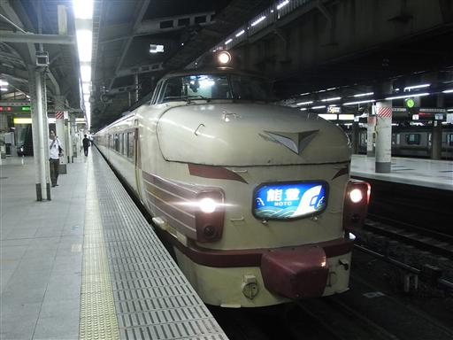
1日目
7:48 燕温泉バス停到着。標高1140m。
今日の天気予報は曇後雨で、何とかもつと思っていたが、
下界ですでに結構な雨が降っている。かなりやる気がなくなる。
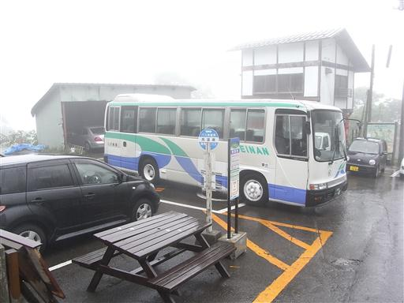
雨の中、温泉街を歩いていく。
これだけ雨が降っているので、外に出ている人は見かけない。
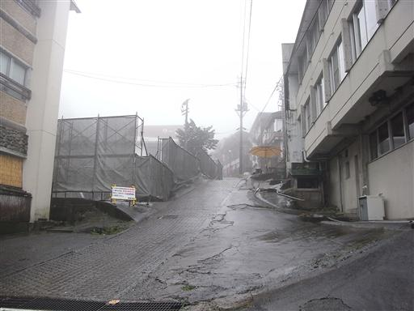
小さな沢を渡る。
この辺りは温泉街なだけあって、水の色も濁っている。
水は温かくなく冷たい。
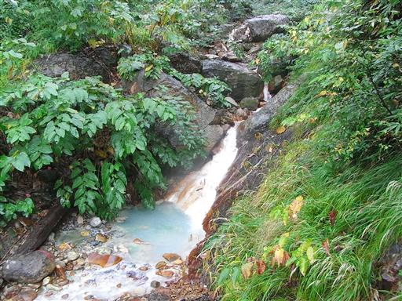
天狗平に到着。何度も引き返そうと思ったが、明日のためにも何とか上を目指すことにする。
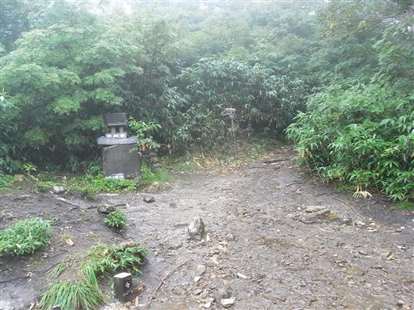
風穴。手をかざすと穴から微かに風が吹いているのが分かる。
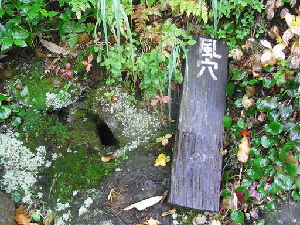
山頂近くになると岩場が現れる。
普段、こういう登山道は好きなのだが、こういう天気だと手も汚れるし嫌なだけである。
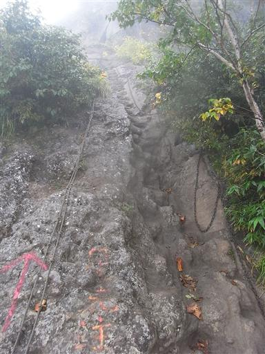
山頂付近に差し掛かると雨も小降りになり、少しだけ視界が開ける。
目の前に見える山影は黒姫山だろうか？
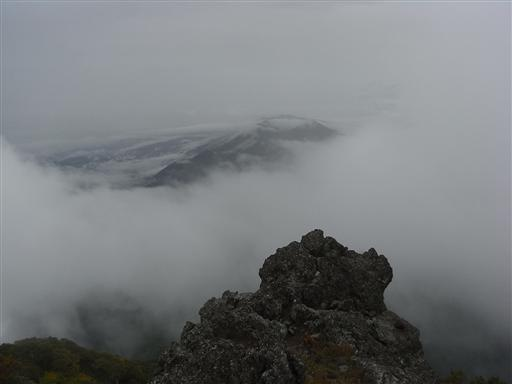
妙高山山頂に建つ祠に到着する。
おそらくここが妙高山の最高地点だが、山頂標識は三角点のところにあるようだ。

山頂周辺は火山らしい岩石が積み重なった地形だ。
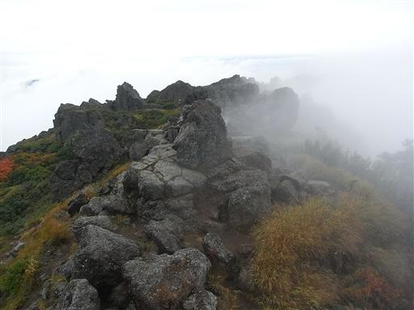
12:36 妙高山山頂到着。標高2454m。
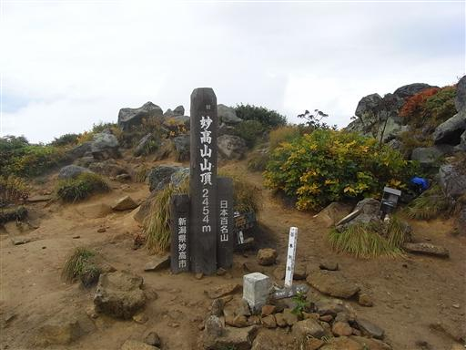
山頂からの展望。雨も止み、だいぶ視界が広がってきた。
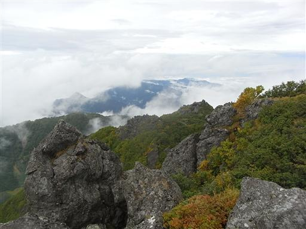
本日の宿泊地・高谷池ヒュッテを目指して、妙高山を下山する。
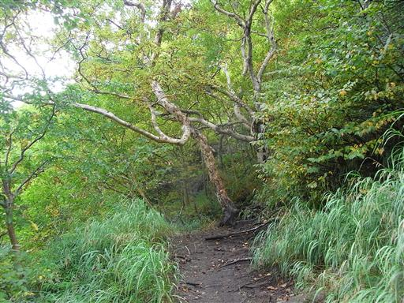
辺りではもうすでに黄葉が始まっている木もある。
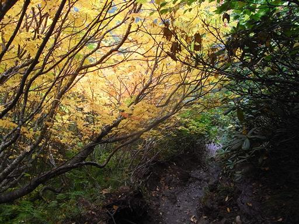
振り返ると、妙高山が大きく聳えている。
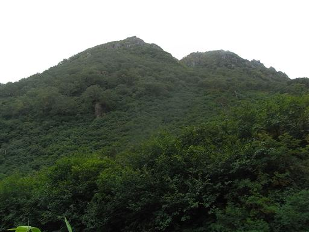
トリカブトの花。猛毒を持つことで有名な植物。
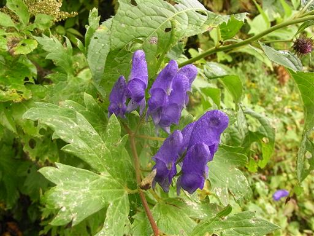
黒沢池ヒュッテに到着。ここに宿泊することもできるが、
明日の行程を考えてもう1時間ほど先にある小屋まで行く。
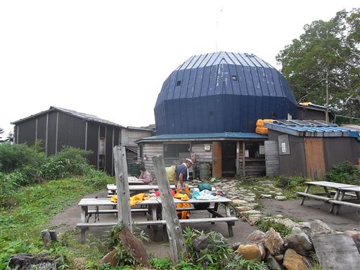
ここからは大きなアップダウンもなく、ゆるやかな木道を歩いていく。
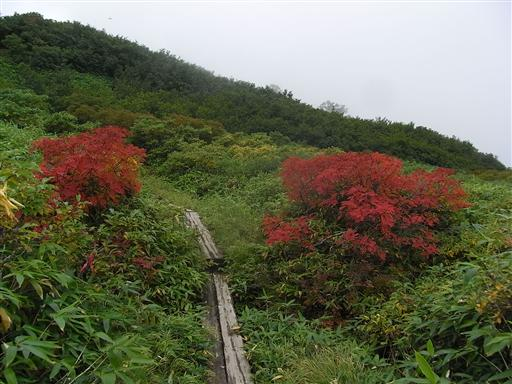
眼下に大きな平地が見えてきた。高谷池ヒュッテはもうすぐ。

15:38 高谷池ヒュッテ到着。標高2105m。
比較的大きな小屋。雨天だというのに、そこそこ人は入っている。
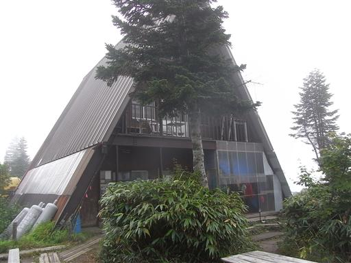
近くには大きな湿原がある。
たまっている水なので生水は飲用不可だが、水は非常に豊富。
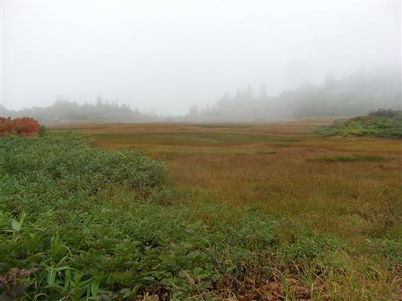
幸い雨は止んでいるので、テント場にテントを張る。
2度目のテント泊だ。夕方になると再び激しく雨が降ってきた。
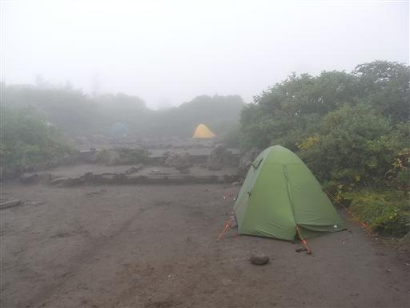